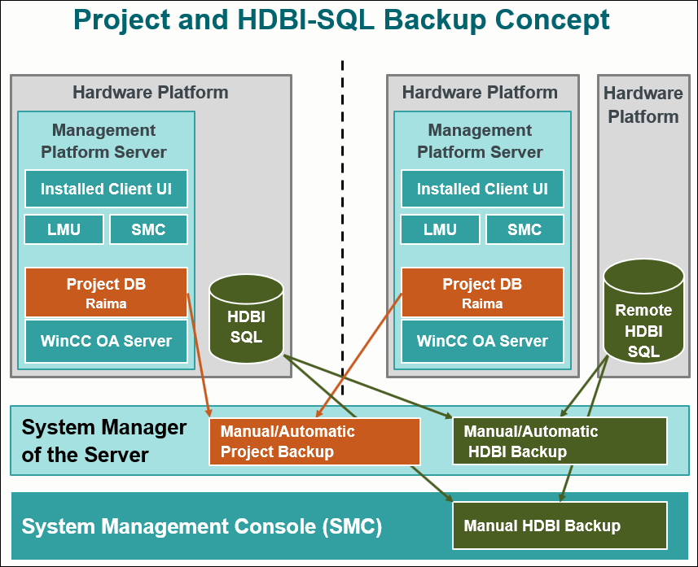
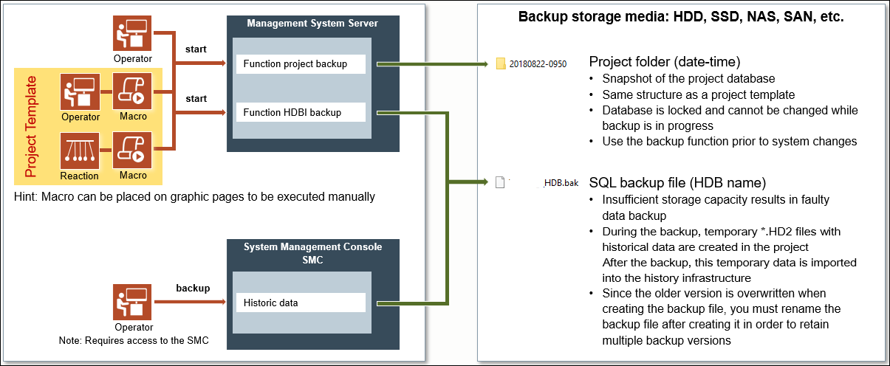
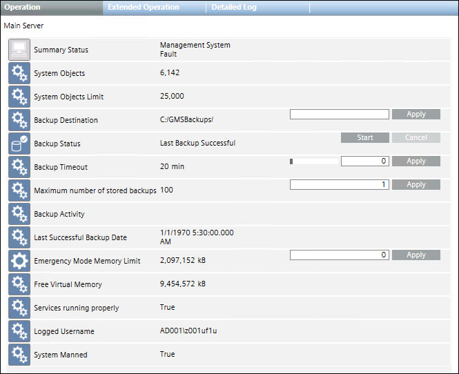

Project and HDB Backup
You can initiate a backup of your project and HDB data from the Management Platform or from the SMC. Backups can be taken either manually or automatically.

A manual project and HDB backup is created using the backup commands available in the Operation/Extended Operation tabs of the Contextual pane and by using macros. An automatic backup can be configured using macros and reactions.

This section provides reference and background information for backing up project and HDB. For procedures, see step-by-step section.
Project Backup
The project backup creates a recursive copy of all data contained in the [Installation Drive]:\[Installation Folder]\[ Project Name] folder, such as libraries or graphics, with the following exceptions:
- The SQL database folder is skipped
- The log folder is copied but left empty
Your project is saved in the backup folder on the Desigo CC server (in the path defined during the installation). For each successful backup, this backup folder is overwritten.
The backup contains all the folders, subfolders, and files of your project. In case the backup fails or if you stop the backup process, the directory created for the backup — and all its contents — are removed.
Project backups must be secured. If you save a project backup to a network location, ensure that the network is protected. It is advisable to keep the three most recent backup copies.
If you plan to make many modifications to your project, it is recommended that you perform a backup before and after the modifications. However, ensure that you do not create a backup on the same disk on which the actual database resides.
You can make a project backup in one of the following ways:
Automatic: An automatic backup can be configured using macros and reactions (see Automatic Backup of Project and HDB Data).
Manual: You can create a manual backup by using the backup commands available in the Operation/Extended Operation tabs of the Contextual pane (see Manual Project Backup from the Management Platform) or by using macros (see Manual Project Backup Using a Macro).
Backup Commands in the Operation/Extended Operation Tabs
When you select the Main Server object in System Browser, the Operation and Extended Operation tabs in the Contextual pane display the various properties and commands of the Main Server object, which also include those relating to the project backup.

- Backup Destination: Indicates the directory where the Backup folder is created. The default directory is C:/GmsBackups/. You can modify the default backup directory, and click Apply to save the changes.
- Backup Status: Indicates the status of the backup. You can manually start the backup operation by clicking Start.
Last Backup SuccessfulIn ProgressCancellingLast Backup FailedNOTE: If the system crashes during the backup operation, the backup status displaysLast Backup Failed, but the directory containing the interrupted backup is not removed. You should remove any failed backup files. See the System Administrator for details.Last Backup CancelledLast Backup Failed for Timeout ExpirationBackup Destination Path Not Found- Backup Timeout: Indicates the maximum time allowed for a backup. Timeout range is 0-120 minutes, where 0 means no timeout. The default value is 20 min. You can modify the timeout value, to the maximum of 120 min and click Apply to save the changes. If the backup timeout is exceeded, the backup is stopped and its status displays the error
Last Backup Failed for Timeout Expiration. - Maximum number of stored backups: Indicates the maximum number of stored backup allowed. Default is 110. You can modify the default value, and click Apply to save the changes.
Note: This setting has a critical impact on the required volume of the storage media. - Backup Activity: Indicates the progress of the backup operation (backup starting, internal backup, name of the component being backed up, and so on).
- Last Successful Backup Date: Indicates date and time of last successful backup.
- Overwrite Backup Folder: Indicates whether or not the backup folder must be overwritten. Default is False. You can modify this default value, and click Apply to save the changes. In particular, if you set:
- False: If this value is set to False, then the backup is created in a new folder having the YYMMDD-hhmm format. The time used is the local time.
- True: If this value is set to True, then the backup is created in a folder named Backup and will be overwritten with the next backup execution. It means that the folder Backup always contains the newest project backup that can be used in situations where you need to copy the most recent project backup to an external storage medium. If the Backup folder already exists, it will be renamed at the moment of the next backup process with the time stamp (backup_date and backup_time) available in the Backup_info.ini file of the backup itself. Be aware that for backup_time, UTC time is used.
HDB Backup
The HDB Backup saves all History Database data as well as all slices of the current Long Term Storage configuration. During the backup, temporary *.HD2 files are created in the project. After the backup, this temporary data is imported into the History infrastructure. The historic database can be backed up using Recovery Models.
HD2 files are created when a started project is not linked to a History Database or, when the SQL server is stopped or is faulty, or when the connection between the SQL server and the project was lost or when the emergency delete function of the History Database is active.
When the backup process starts, and until it completes, the DB is locked. During this time period, you cannot create and/or delete objects, modify the existing configuration, or carry out any import operations.
You can make a HDB backup in one of the following ways:
Automatic: An automatic backup can be configured using macros and reactions (see Automatic Backup of Project and HDB Data).
Manual: The manual backup of the HDB data can be taken from either SMC (see Manual Backup of HDB Data from SMC) or from the Extended Operation tab in the Management Platform (see Manual Backup of HDB Data from the Management Platform), or using macros (see Manual Data Backup Using a Macro).